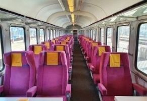
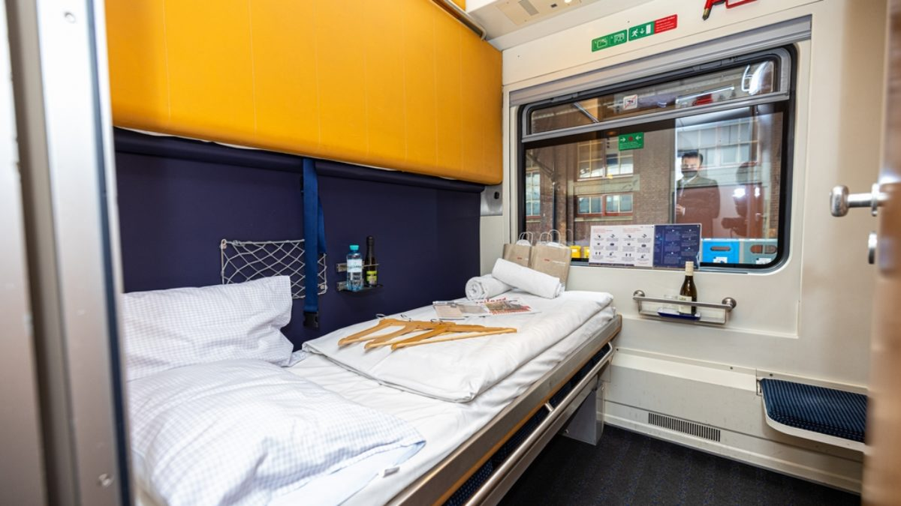

Комфорт на борту
Типи вагонів RailLink
Для різних форматів подорожі: денні швидкісні рейси, нічні переїзди та бюджетні поїздки на великі відстані.

Сидячий 2 клас
Практичний вибір для денних маршрутів до 6 годин.
- М’які ергономічні крісла
- Розетки 220V та USB-порти
- Багажні полиці над місцями
- Електронне табло по маршруту

Сидячий 1 клас
Підвищений рівень комфорту для ділових поїздок.
- Більша відстань між кріслами
- Індивідуальне освітлення
- Тихий вагон без гучних дзвінків
- Безкоштовна вода та преса

Купе
Класичний формат нічної подорожі для 4 пасажирів.
- Закриті купе з дверима
- Комплект постільної білизни
- Місце для ручного багажу
- Доступ до питної води у вагоні

СВ
Найкомфортніший варіант нічного рейсу у форматі 2-місного купе.
- Підвищена приватність
- М’які матраци та збільшені полиці
- Розетка біля кожного місця
- Пакет дорожнього сервісу
Базові зручності у більшості рейсів
Вагони RailLink: вибір класу для будь-якої подорожі
RailLink пропонує кілька форматів вагонів, щоб пасажири могли обрати оптимальний баланс вартості, комфорту та тривалості поїздки. На сторінці представлено основні типи вагонів для денних і нічних маршрутів, а також короткий огляд сервісів, що доступні у кожному класі. Це допомагає швидко порівняти варіанти перед бронюванням квитків на популярні напрямки по Україні.
Опис кожного типу вагона включає практичну інформацію про посадку, зручності на борту, простір для багажу та цільову аудиторію поїздки. Завдяки цьому пасажири можуть заздалегідь визначити, який формат краще підходить для ділових, туристичних або сімейних подорожей. Такий підхід спрощує планування маршруту та покращує загальний досвід подорожі залізницею.